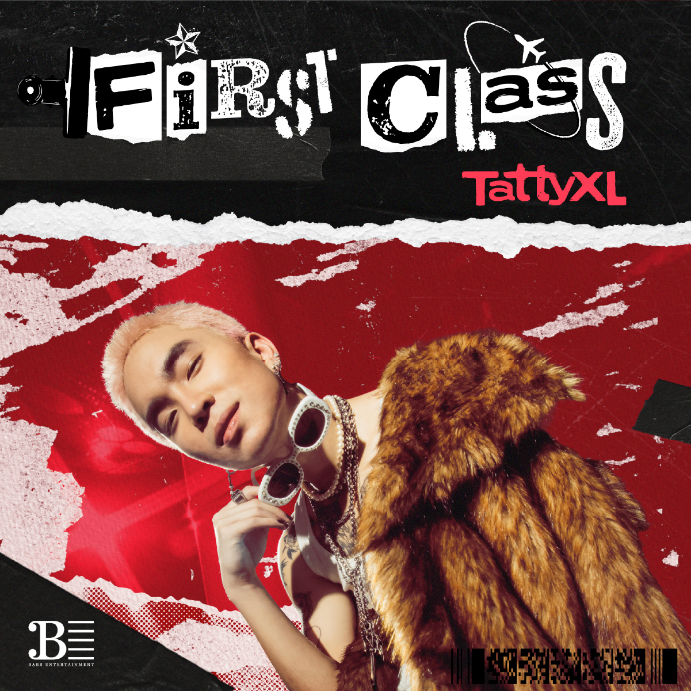
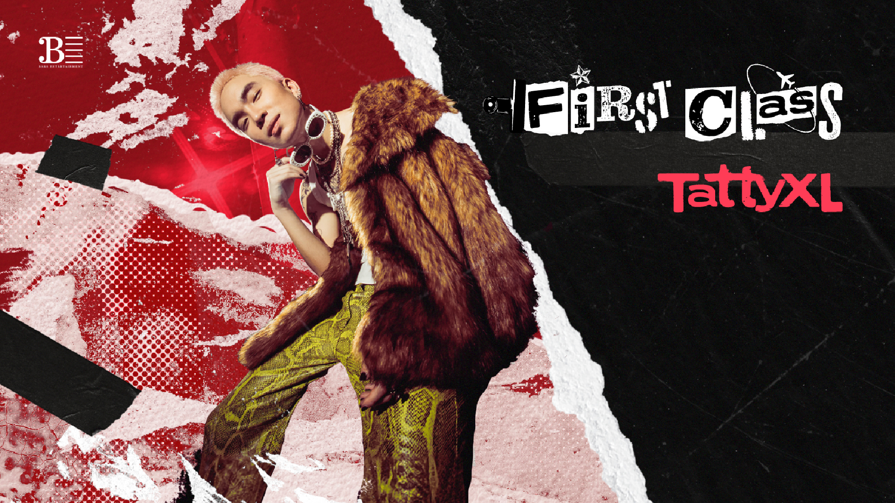
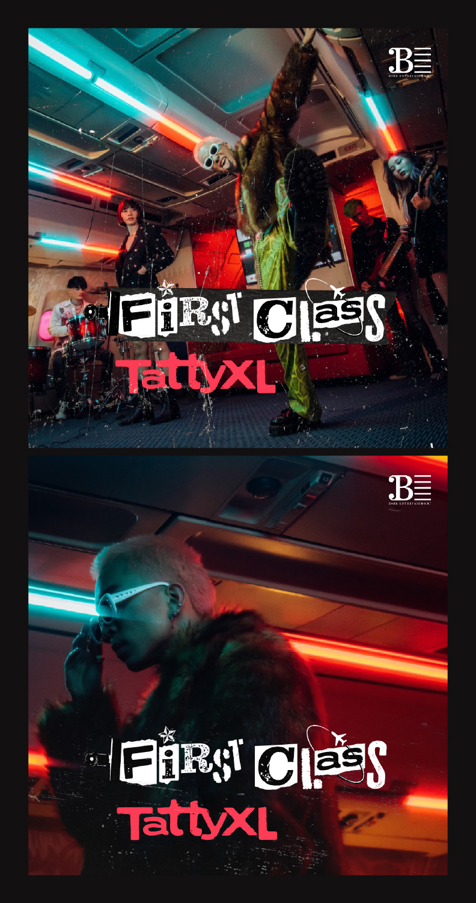
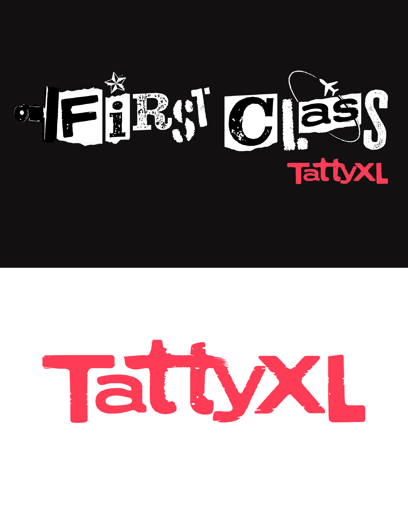

PROJECT 04
TattyXL — First Class Single Cover

ABOUT
A single cover design for TattyXL under BARS Entertainment, built around the energy of the song and a pop-punk mood.
I was responsible for the cover design and the logo design. The direction came from the feeling of the track — something loud, rough, playful, and a little messy in a way that still felt intentional.
I wanted the visual to feel fast and a bit chaotic, so I leaned into torn-paper elements, distressed type, and a lot of texture to give it that pop-punk edge.



PROCESS
I mostly just followed the feeling.
This was my first time designing a music cover, and maybe my last — who knows. I didn’t want it to feel too clean or too polished, so I pushed the textures, the rough edges, and the overall noise of the composition.
A lot of it came from instinct. I kept building the visual around what felt cool, loud, and slightly chaotic in a way that matched the song.
It was a lot of texture, a lot of vibe, and honestly just fun to make.